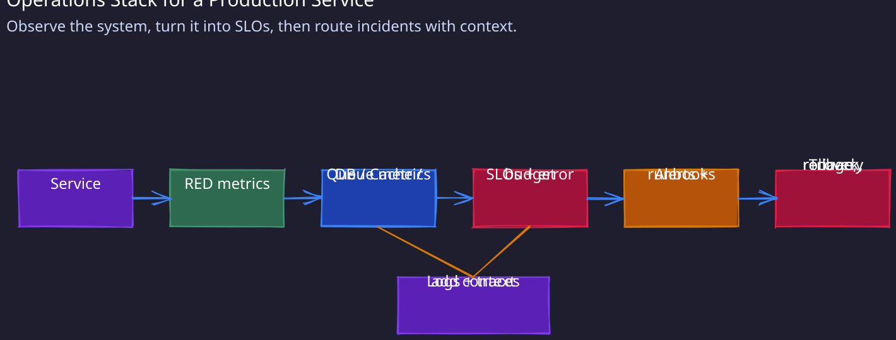
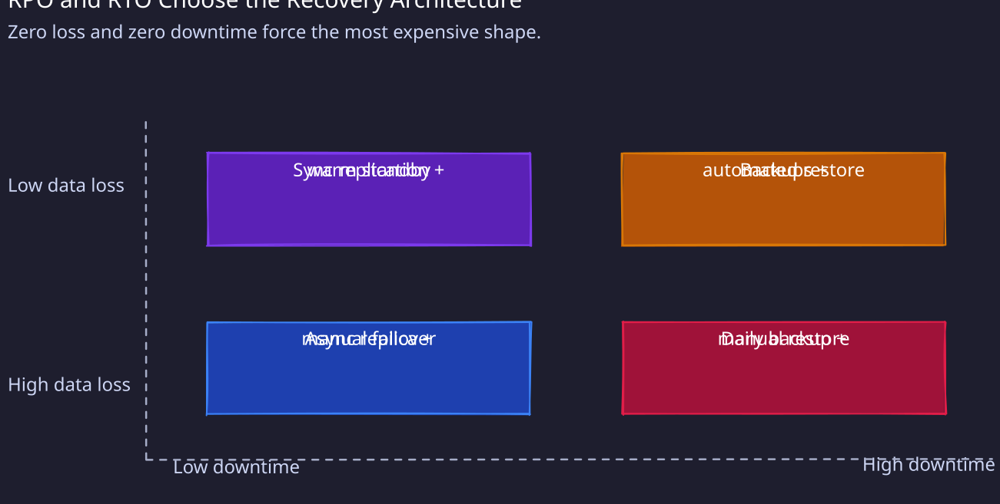

This checklist captures the operational considerations that separate production-grade systems from prototypes. Staff engineers are expected to design systems that are observable, reliable, and maintainable from day one.
1. Monitoring Strategy (What to Measure)

RED Metrics (For Every Service)
Apply these three golden signals to every user-facing service:
-
Rate: Requests per second (RPS)
- Alert threshold: ±20% deviation from baseline
- Why: Sudden drops indicate service degradation; spikes may indicate attack or viral traffic
-
Errors: Error rate as percentage of total requests
- Alert threshold: >1% error rate sustained for 5 minutes
- Why: Users experiencing failures; requires immediate investigation
-
Duration: Request latency (P50, P95, P99)
- Alert threshold: P95 exceeds SLO by 50% (e.g., if SLO is 200ms, alert at 300ms)
- Why: Latency degradation affects user experience before complete failures occur
Component-Specific Metrics
Database:
- Query throughput: QPS (queries per second)
- Connection pool utilization: Alert at >80% to prevent exhaustion
- Replication lag: Alert if >1 second; indicates read replicas are stale
- Disk usage: Alert at >75%; provides time for capacity planning
Cache Layer (Redis/Memcached):
- Hit rate: Percentage of requests served from cache
- Target: >80% for read-heavy workloads
- Alert if drops below 70%; indicates cache misses or invalidation issues
- Eviction rate: Keys being removed due to memory pressure
- Alert if >10% of operations; may need to increase cache size
- Memory usage: Alert at >85%; prevents OOM scenarios
- Connection count: Alert at >80% of max connections
Message Queue (Kafka/SQS/RabbitMQ):
- Queue depth: Number of pending messages
- Alert if consistently growing; indicates consumer lag
- Consumer lag: Time delay between message production and consumption
- Alert if >5 minutes for real-time systems; >1 hour for batch processing
- Dead Letter Queue (DLQ) size: Failed messages requiring manual intervention
- Alert on any DLQ growth; each message represents a failure
Load Balancer:
- Active connections: Current open connections
- Unhealthy target count: Backend services failing health checks
- Alert if >25% of targets unhealthy; indicates widespread issues
- 5xx error rate: Server-side errors
- Alert at >0.5% of requests
2. Service Level Objectives (SLOs)
Definition & Purpose
SLOs define the reliability targets for your service. They balance user expectations with engineering cost—tighter SLOs require more operational investment.
Example SLOs by Use Case
User-Facing API (e.g., 01-Twitter Timeline, Uber Booking):
- Availability: 99.9% uptime
- Translates to: 43 minutes downtime per month acceptable
- Measured over rolling 30-day window
- Latency:
- P95 < 200ms (95% of requests complete within 200ms)
- P99 < 500ms (99% of requests complete within 500ms)
- Error rate: < 0.1% of requests return 5xx errors
Backend Processing Service (e.g., Notification Delivery, Analytics Pipeline):
- Availability: 99.5% uptime (3.6 hours downtime per month acceptable)
- Throughput: Process 100K events/second sustained
- Latency: P99 < 2 seconds (less critical for async processing)
- Data freshness: Results available within 5 minutes of event occurrence
Data Consistency:
- Eventual consistency window: 99% of writes visible within 1 second
- Strong consistency guarantee: For critical operations (payments, inventory)
Error Budget
Once you define SLOs, calculate your error budget—the acceptable amount of downtime or errors: Example: 99.9% availability SLO
- Error budget: 0.1% downtime = 43 minutes/month
- If budget exhausted: Freeze feature launches, focus on reliability
- If budget healthy: Safe to ship new features with acceptable risk
3. Recovery Objectives (RPO and RTO)

Recovery objectives define how much data loss and downtime your system can tolerate. They are the single most important input to your replication, backup, and failover architecture — get them wrong and you either over-engineer (wasting cost on synchronous replication you don’t need) or under-engineer (discovering during an outage that your daily backup means 23 hours of lost transactions).1. RPO (Recovery Point Objective)
RPO answers: how much data can you afford to lose? Measured as a time window — the maximum acceptable gap between the last durable write and the point of failure.
| RPO Target | What It Means | Required Mechanism | Example |
|---|---|---|---|
| 0 (zero data loss) | Every committed write survives any failure | Synchronous replication — the write is not acknowledged until replicas confirm. Spanner (Paxos), PostgreSQL synchronous standby | Financial ledgers, payment systems |
| < 1 minute | Lose at most 1 minute of writes | Async replication with sub-minute lag + WAL shipping or CDC streaming | E-commerce orders, user-generated content |
| < 5 minutes | Lose at most 5 minutes of writes | Async replication with relaxed lag monitoring. Alert if lag exceeds target | Social media posts, analytics events |
| < 24 hours | Lose at most a day of writes | Daily database backups (pg_dump, mysqldump, snapshots) | Internal dashboards, batch reports |
How RPO drives architecture:
- RPO = 0 forces synchronous replication, which adds latency to every write (cross-AZ: ~1-2ms, cross-region: ~50-200ms). You pay for consistency on every operation
- RPO > 0 allows asynchronous replication, which keeps write latency low but creates a window where data exists only on the primary. If the primary dies before replication catches up, that window of data is lost
- The replication lag is your actual RPO — not the configured target. Monitor it continuously. A system configured for RPO=1min but running with 10min replication lag has an actual RPO of 10min
2. RTO (Recovery Time Objective)
RTO answers: how long can you afford to be down? Measured from the moment of failure to the moment the system is serving traffic again.
| RTO Target | What It Means | Required Mechanism | Example |
|---|---|---|---|
| 0 (zero downtime) | Users never experience an outage | Active-active multi-region with automatic failover + DNS with <30s TTL | Global payment processors, stock exchanges |
| < 1 minute | Brief blip, most users don’t notice | Warm standby with automated failover (health check triggers promotion). Pre-provisioned replicas | Ride-sharing, real-time messaging |
| < 15 minutes | Noticeable outage, acceptable for most B2B | Automated failover with DNS cutover. Standby needs to catch up on replication lag before serving | SaaS platforms, content management |
| < 4 hours | Extended outage, manual intervention acceptable | Cold standby or restore from backup. Operator runs runbook to spin up new infrastructure | Internal tools, batch processing |
How RTO drives architecture:
- RTO = 0 requires active-active deployment where both regions serve traffic simultaneously. Failover is instant because the standby is already handling requests. This is the most expensive and complex option — you must handle write conflicts across regions
- RTO < 1 minute requires a warm standby that is running, replicating, and ready to be promoted. Automated health checks detect failure and trigger promotion without human intervention
- RTO < 15 minutes allows for automated but slower failover — DNS propagation, connection draining, replication catch-up
- RTO > 1 hour means you can restore from backups. The bottleneck is usually data transfer time (restoring a 1TB database from S3 takes ~30 minutes at 500 MB/s)
3. RPO/RTO Interaction Matrix
The combination of RPO and RTO determines your minimum architecture:
| RTO = 0 | RTO < 1 min | RTO < 15 min | RTO < 4 hrs | |
|---|---|---|---|---|
| RPO = 0 | Active-active + sync replication (Spanner, CockroachDB) | Sync replication + warm standby + auto-failover | Sync replication + automated restore | Sync replication + cold standby |
| RPO < 5 min | Active-active + async replication + conflict resolution | Async replication + warm standby + auto-failover | Async replication + DNS failover | Async replication + manual failover |
| RPO < 24 hrs | Not practical (contradictory) | Not practical | Daily backups + automated restore | Daily backups + manual restore |
4. Clarifying RPO/RTO in Interviews
Ask these questions early in any system design that involves data durability or multi-region:
- “What happens if we lose the last 5 minutes of writes?” — If the answer is “users re-submit” (shopping cart), RPO=5min is fine. If the answer is “money disappears” (payments), RPO must be 0
- “How long can users tolerate the system being down?” — A social feed being down for 5 minutes is annoying. A payment system being down for 5 minutes during Black Friday is a business crisis
- “Is the cost of achieving these targets justified?” — RPO=0 with RTO=0 across 3 regions requires synchronous cross-region replication + active-active. This adds ~100-200ms to every write and triples infrastructure cost. Most systems don’t need it
4. Failure Detection & Alerting
Health Check Endpoint
Every service must expose a /health endpoint:
GET /health
Response: 200 OK if healthy, 503 Service Unavailable if unhealthy
Health check criteria:
- Database connection pool has available connections
- Downstream dependencies reachable (with timeout)
- Disk space >20% available
- Memory usage <90%
Alert configuration:
- Alert if 3 consecutive health check failures (prevents false positives)
- Health checks every 10 seconds
- Alert fires within 30 seconds of sustained failure
Circuit Breaker Pattern
Prevent cascading failures by failing fast when downstream services degrade:
States:
- Closed: Normal operation, requests pass through
- Open: Downstream service failing; reject requests immediately (return cached/default response)
- Half-Open: Test if service recovered; allow 1 request to check
Configuration example:
- Open circuit if 50% error rate over 10 requests
- Stay open for 30 seconds (cool-down period)
- Half-open: Try 1 request; if successful → closed, if fails → open for another 30 seconds
Alert Principles
Design alerts to be actionable—each alert should require specific human intervention:
Good alert:
- “Payment API P95 latency >500ms for 5 minutes” → Investigate slow queries, check DB load
Bad alert:
- “Disk usage >50%” → No immediate action needed; remove noise
Alert fatigue prevention:
- Maximum 2 alerts per week per engineer on-call
- If more frequent: Either raise threshold or fix root cause
- Page humans only for user-impacting issues
5. Incident Response (Quick Triage Steps)
When an alert fires or users report issues, follow this systematic approach:
Step 1: Check Dashboards (2 minutes)
Look at your monitoring dashboards in this order:
- Traffic: Is RPS normal, spiking, or dropping?
- Errors: Are error rates elevated? Which error codes (4xx vs 5xx)?
- Latency: Are P95/P99 latencies within SLO?
Step 2: Check Recent Changes (2 minutes)
- Deployments: Was code deployed in last 1 hour?
- Configuration changes: Feature flags toggled, scaling events?
- Infrastructure changes: Database failover, network changes? If recent deployment: Rollback immediately if user-impacting
Step 3: Check Dependencies (3 minutes)
Map your service dependencies and check their health:
- Database: Connection pool exhaustion? Slow query? Replication lag?
- Cache: Redis down? Hit rate dropped? Eviction rate spiked?
- Downstream services: Are they returning errors? High latency?
- External APIs: Third-party service degradation?
Step 4: Check Logs (5 minutes)
Search logs for patterns:
- Error spikes: Filter for ERROR level logs
- Stack traces: Identify failing code paths
- Correlation IDs: Track a single user request across services
Step 5: Escalate if Needed
Page on-call if:
- Customer-impacting issue (errors >1%, latency >2× SLO)
- Cannot identify root cause within 10 minutes
- Issue affects >25% of users
Avoid premature escalation: Gather data first (dashboards, logs, recent changes)